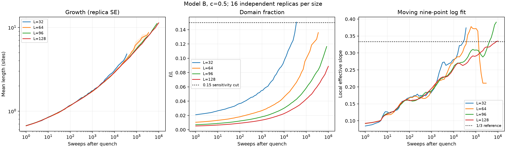

How much can a short simulation tell us about coarsening?
Draft for student review. No academic endorsement or industrial validation claimed.
I'm comparing two simple models of phase ordering, then testing how much the measured growth rate depends on the way I run and analyse them.
The model
Both engines use a two-dimensional Ising lattice. Model A uses Metropolis spin flips; Model B uses Kawasaki exchanges, which conserve composition exactly. Model B also allows different horizontal and vertical couplings.
The problem I'm investigating
The conserved model first gave a measured growth exponent below the late-stage 1/3 prediction. I extended the runs to test whether that shortfall was stable. My question now is what the finite data can really separate: time-window effects, lattice-size effects, and the way domain size is measured.
What I can check
Tests cover energy bookkeeping, conserved composition, correlation analysis and the regular-solution mapping. The completed extension retains 128 new seeded trajectories, raw snapshots, all declared fit windows and missing measurements.
Current evidence
The first study ran 64 trajectories to 200,000 sweeps. A separate extension ran 16 new trajectories for each of two compositions and four sizes to one million sweeps. At width 128, the broad 20,000–1,000,000-sweep fitted slopes were 0.300 [0.291, 0.309] for 50:50 and 0.281 [0.268, 0.293] for 15:85. Those are whole-trajectory bootstrap intervals for one chosen length measure, not uncertainty about the eventual growth law. The narrower late window failed our fixed fit rule. The small off-centre lattice flattened; some small 50:50 lengths were unresolved. A fixed new-seed image test repeated a negative measurement shift, but also changed apparent phase fraction.

One question for a reviewer
What independent length measure would you use to check whether our time- and size-dependent slopes are properties of the domains rather than of the connected-correlation threshold?
Scope: a controlled model study, not an alloy-design tool. It omits 3D structure, elastic strain, defects and composition-dependent mobility. Monte Carlo sweeps have not been converted into physical ageing time.
The materials thermodynamics diagram compares the regular-solution approximation with exact infinite-2D Ising coexistence. It helps distinguish phase coexistence from local instability; neither curve is a measured alloy diagram or a proof of the finite-run kinetic mechanism.
{kind=link}
A published binary Fe–Cr ageing study links microstructure measurements to hardness and reports different feature sizes from different microscopy methods. It motivates checking our length definition; its hardness values are not predictions from this simulation.
In a separate public Al–Ge image test, I fixed 11 slices at each ageing stage before measuring them. Seven early central slices had no Ge in the chosen square, so the length was undefined. The published paper separates Ge lamellae from later precipitates; my first all-Ge length does not. This is a question for a microscopist, not experimental validation of my simulation.